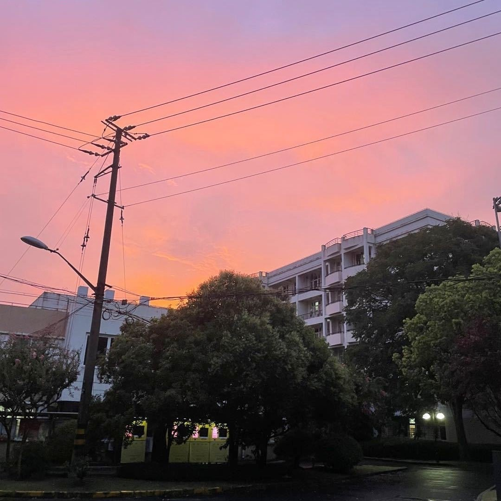

THINK, ACT, EVOLVE
Haoyang Zou 邹皓阳
Ph.D. student at Shanghai Jiao Tong University.
I study how strong reasoning becomes reliable agent behavior, and I like building the full loop from training to real-world systems.
About Me
I work on models that can think, act, and hold up once they leave controlled environments and enter real work.
I am a first-year Ph.D. student at Shanghai Jiao Tong University, advised by Prof. Pengfei Liu, and a research intern at ByteDance Seed, where I work closely with Yujia Qin. My research centers on reasoning, reinforcement learning, and agents, with a focus on training foundation models for capable and reliable agent behavior. Before that, I received my B.S. in Artificial Intelligence from Fudan University.
Research Interests
- Reasoning and Reinforcement Learning for Agents Studying how agents can plan, adapt, and remain reliable in complex environments.
- Coding Agents in Practice Designing coding agents that optimize for real-world usefulness rather than benchmark performance.
- Self-Improving Agent Systems Exploring systems whose capability grows through use and interaction.
News
- 2026.02 Released Seed 2.0 as a core contributor.
- 2025.12 Released Seed 1.8 as a core contributor.
- 2025.09 Released the UI-TARS-2 technical report.
- 2025.09 Started my Ph.D. at Shanghai Jiao Tong University.
- 2025.06 Joined ByteDance Seed as a research intern.
- 2025.06 Graduated from Fudan University.
Selected Work


Experiences
-
2025.06 - Present
Research Intern, ByteDance SeedFocused on coding and GUI agents, working closely with Yujia Qin, and contributing to UI-TARS-2, Seed 1.8, and Seed 2.0 as a core contributor.
-
2025.09 - Present
Ph.D. Student, Shanghai Jiao Tong UniversityComputer Science, advised by Prof. Pengfei Liu, with a focus on reasoning, reinforcement learning, and agent systems.
-
2021.09 - 2025.06
B.S., Fudan UniversityArtificial Intelligence